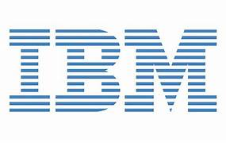

About Bangalore
Bangalore, officially known as Bengaluru, is called the Silicon Valley of India. It is the largest technology hub in the country and home to hundreds of multinational companies, innovative startups, and global research centers. The city provides excellent opportunities for software engineers, developers, cloud architects, AI specialists, cybersecurity professionals, and data scientists.
Many of the world's biggest technology companies have established their Indian headquarters or major development centers in Bangalore. The city's strong infrastructure, skilled workforce, and innovation ecosystem make it one of the most preferred destinations for IT careers.
Top IT Companies in Bangalore
1. Google

Company Type : Product-Based Company
Google develops Search, Android, Gmail, Google Maps, Chrome, YouTube and Google Cloud. Its Bangalore office works on software engineering, cloud computing and Artificial Intelligence.
Official Website :
www.google.com
2. Microsoft

Company Type : Product-Based Company
Microsoft develops Windows, Microsoft Office, Azure Cloud, GitHub, Xbox and AI solutions. Bangalore is one of Microsoft's biggest development centers outside the USA.
Official Website :
www.microsoft.com
3. Amazon
Company Type : Product-Based Company
Amazon operates one of its largest technology campuses in Bangalore. It develops AWS Cloud, Alexa, E-Commerce platforms and AI technologies.
Official Website :
www.amazon.com
4. Flipkart
Company Type : Product-Based Company
Flipkart is India's leading e-commerce company headquartered in Bangalore. It develops shopping applications, payment systems and logistics software.
Official Website :
www.flipkart.com
5. Adobe
Company Type : Product-Based Company
Adobe develops Photoshop, Illustrator, Premiere Pro, Acrobat Reader and Creative Cloud applications used worldwide.
Official Website :
www.adobe.com
6. Intel
Company Type : Product-Based Company
Intel designs processors, semiconductor chips, AI hardware and networking technologies. Bangalore houses Intel's largest research center outside the USA.
Official Website :
www.intel.com
7. Cisco
Company Type : Product-Based Company
Cisco develops networking devices, cybersecurity solutions, cloud networking and enterprise communication software.
Official Website :
www.cisco.com
8. Oracle

Company Type : Product-Based Company
Oracle develops database software, enterprise applications, cloud infrastructure and business technology solutions.
Official Website :
www.oracle.com
9. IBM

Company Type : Service-Based & Product-Based
IBM provides cloud computing, AI, consulting, cybersecurity, quantum computing and enterprise software solutions.
Official Website :
www.ibm.com
10. SAP
Company Type : Product-Based Company
SAP develops enterprise resource planning (ERP) software, cloud applications, analytics platforms and digital business solutions.
Official Website :
www.sap.com
Help
This webpage is designed to help students, freshers, and job seekers explore Bangalore's leading IT companies. Each company profile includes its business type, a short description, and the official website link. Use the navigation menu to switch between different sections of the page easily.
For more information about IT companies located in Chennai and Hyderabad, return to the Home page and choose the desired city. We regularly update our website with new companies, career opportunities, and technology trends.